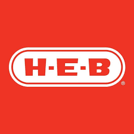
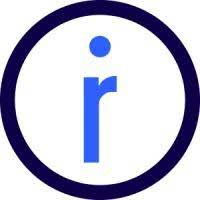

Gabriel Goulis
Software Engineering PhD Student at University of Arizona.
Specializing in distributed systems, microservice architecture, and static analysis.
About Me
Passionate about pushing the boundaries of software engineering.
I am an avid student of Computer Science specifically software engineering. I possess a solid foundation in both frontend and backend development from prior experiences in microservice systems, managing web systems and other assorted roles.
As a recent graduate of Baylor University with a Bachelor's in Computer Science and multiple semesters of experience in academic research, I naturally found great interest in pursuing this further. With 1 publication and 2 pending publications, I only grow more invested in digging further beneath the surface of concepts like Microservice Architecture.
I find great joy in learning new programming concepts, languages, paradigms and frameworks. Solving challenging issues gives me a sense of accomplishment I cannot find outside of Computer Science. Personally I see no barrier to what I can achieve with the current state of technology the only bound is the extent of my creativity and passion which is only growing.
Research & Publications
Advancing the field of software architecture.
Change impact analysis in microservice systems: A systematic literature review
Published: October 2024
Towards Change Impact Analysis in Microservices-based System Evolution
Pending Publication
Experience
My professional journey so far. Click items to expand.
Platform Developer
OFFICErING
- Built automated compliance monitoring that triggered real-time alerts for policy violations.
- Designed an automated testing framework using SIP user agents via DTMF-driven interactions.
- Built a Python pipeline for automated lead generation and AI-driven enrichment of 30,000 leads.
- Modernized legacy codebases integrating OpenTelemetry for distributed tracing and metrics.
- Designed CI/CD pipelines to streamline deployment of container images.
Full Stack Developer
ICPC
- Architected high-throughput REST APIs, cutting system latency by 90%.
- Modernized cloud storage architecture using AWS S3 presigned URLs offloading 99% of bandwidth.
- Optimized database queries across 10+ tables, reducing memory footprint by 50%.
- Automated compliance pipelines in Spring Boot.
- Developed scalable document generation engines for PDF credentials.
Student Researcher
University of Arizona (Oulu, Finland)
- Collaborated on research papers on software architecture debt and architectural rule violations.
- Developed a Java tool using 40+ indicators to track Architectural Degradation over time.
- Leveraged control dependencies like REST calls to capture temporal data on system architecture.

Corporate Technology Intern
H-E-B
- Updated employee training courses using new xAPI standard serving 145,000+ partners.
- Constructed internal tools to build new courses using React.
- Setup an open source LRS prototype using Docker.
- Rebuilt training course template decreasing load times by over 100%.

Junior Developer
OfficeRing
- Utilized PHP to implement backend functionality, supporting the adoption of 4 new features.
- Deployed a Node.js microservice to replicate data to S3 buckets, reducing server load.
- Built system health tests in Postman and deployed in Node.js and PM2.
Education
Academic background.

University of Arizona
PhD in Software Engineering (CS)
July 2024 - August 2028

Baylor University
Bachelor of Science in Computer Science
July 2021 - May 2024
Lone Star College
Associate of Science
June 2019 - June 2021
Skills & Technologies
Tools I use to build great software.